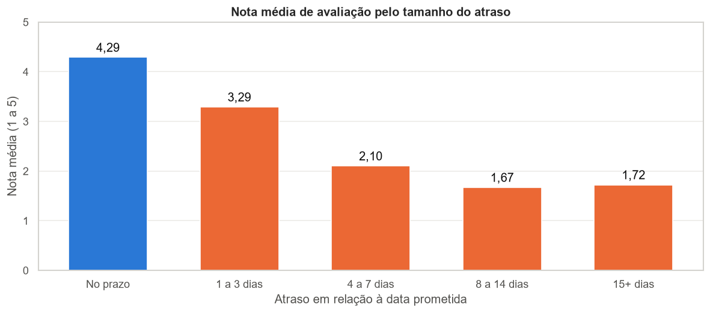

Olist e-commerce: late deliveries × customer satisfaction
- Question
- Do late deliveries hurt customer satisfaction? Where should the company act first?
- What I did
- Exploratory analysis in Python of about 100k real orders (Olist, 2016–2018), joining 6 relational tables, with data quality checks, feature engineering (delivery time, days late), descriptive statistics and Pearson correlation. Power BI dashboard with a star schema, Power Query and DAX measures.
- Result
- Late orders get an average rating of 2.27, versus 4.29 for on-time orders.
- They are only 7% of orders but drive 32% of all negative reviews.
- The Northeast has the highest late rates (Alagoas 21%); Rio de Janeiro, the 2nd largest market, is late 12% of the time, almost 3 times as often as São Paulo and Minas Gerais.
- Jan–Aug 2018 revenue was 141% higher than the same period of 2017, peaking on Black Friday.
PythonpandasSeabornPower BIDAXStar schema
